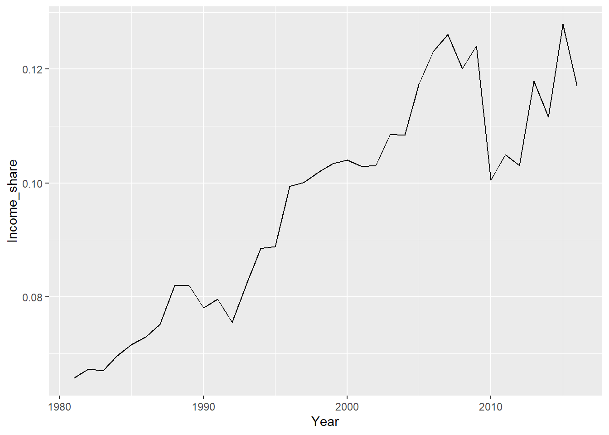

Introduction to R
by Hans H. Sievertsen (h.h.sievertsen@bristol.ac.uk)
26-1-2020 - version 0.3: minor adjustments typos etc.
28-10-2019 - version 0.2: corrected typos etc.
08-10-2019 - version 0.1: first version
Welcome!
Hi! This is an introduction for R written for Economic Data students at the University of Bristol. (But anyone is welcome to use it.) The goal of the tutorial is to create data visualizations of income inequality using data from the World Inequality Database. To achieve this goal we’ll go through eight small “lectures” and cover the following topics:
- plotting data
- loading data
- adjusting charts
- merging data
- modifying data
- merging data
- appending data
- restructuring data
The tutorial includes small code blocks. The code blocks allow you to immediately try the described functions and observe the result. There are also small quizzes to check your progress and assess whether the code ran correctly.
Let’s get started. Clcik on Next topic to start the first lecture.
1 Create a chart
In this section we load data into R and create a chart using this data.
Let’s say that we would like to create a line chart of the income shares in the United Kingdom. In Microsoft Excel we would do this using the following steps:
- Open the data in Microsoft Excel
- Select “Insert”
- Select “Line chart”
- Select “Select Data”
- Select the data for the horizontal axis
- Select the data for the vertical axis
In R we can load data and create a line chart by asking R to run two lines of “code”. A code is basically just written instructions that replace our “mouse clicking” in Microsoft Excel. So instead of using the mouse to click on “File” and then “Open” and then “Browse” and so on, we use the “R language” to tell R to do this. The box below contains your first R code. In programming-based software we first write some code and then tell the software to “execute” or “run” this code. You can run the code below by clicking “Run Code”. Try it!
wid_data<-read_csv("https://www.hhsievertsen.net/economicdata/src/wid_uk_t1.csv")
ggplot(data=wid_data,aes(x=Year,y=Income_share))+geom_line()You should now see your first R chart. Congratulations!
How did you create this chart? What is going on in these two lines? Let’s look at the first line, starting from the back:
- the code
read_csv()is the R equivalent of using the mouse to click on “File” and then “Open” (which is what we would do in Excel). - inserting the address
"https://www.hhsievertsen.net/economicdata/src/wid_uk_t1.csv"in the parentheses( )is the R equivalent of selecting “Browse”. We don’t browse with R but instead provide a precise address of where our document is (we will return to this later). <-is the assignment operator. By writing<-read_csv()we tell R to assign the data it loads withread_csv()to the name we enter to the left of the arrow.wid_datais just a name for the dataset. We could have used more or less any name here. But I decided to go for wid_data because we load data from the World Inequality Database (wid).- To sum up, we loaded a dataset from a specified location and assigned it to the name wid_data.
So let’s try just to run just this first line ( again click “Run Code”):
wid_data<-read_csv("https://www.hhsievertsen.net/economicdata/src/wid_uk_t1.csv")What happens Nothing. That’s because we simply asked R to load the data. We didn’t tell R to do anything with the data. The action happens in the second line of the first code. Let us now look at that line.
- We start the second line with
ggplot( )which initiates a “chart object” in R. - In the parentheses of the
ggplot()command, we first writedata=wid_data. This tells R to create a chart object with the data loaded in the first line as the dataset. - We also add
aes(x=Year,y=Income_share)to theggplot( )command. This tells R to use the variable Year on the x-axis and Income_share on the y-axis.
Let’s try just to run the first line and the code we just discussed:
wid_data<-read_csv("https://www.hhsievertsen.net/economicdata/src/wid_uk_t1.csv")
ggplot(data=wid_data,aes(x=Year,y=Income_share))+geom_line() we tell R to add a line chart to the chart object. This completes the code. Let’s try to run the complete code again:
rm(wid_data)
rm(wid_dato)wid_data<-read_csv("https://www.hhsievertsen.net/economicdata/src/wid_uk_t1.csv")
ggplot(data=wid_dato,aes(x=Year,y=Income_share))+geom_line()# The wid_dato object doesn't exist, because the object is called wid_data. # Change the o to an a in the "wid_data" in the second line and run the code again.Oh. We didn’t get a chart this time. Instad we received an error message. The instructions to R did not work, because we made a mistake. Luckily R gives us some hints at what went wrong. The error message says: object 'wid_dato' not found. This means that R is trying to do something with the object called wid_dato, but that object doesn’t exist! We should therefore check whether the element is created. We created that object in the first line. Let’s look closely at first line! The name of the object we create is wid_data. That is fine, but it is different to the name we use in the second row, where we call it wid_dato. Please change the “o” to an “a” in wid_dato and click “run code”" again. Does it work now?
We can add comments to the R code. A comment is content that R ignores when it checks the instructions. We add comments by starting the line with the hash tag symbol #. In the following code I added two lines of comments to explain what we are doing.
# 1. Load the data and store it in the object called wid_data
wid_data<-read_csv("https://www.hhsievertsen.net/economicdata/src/wid_uk_t1.csv")
# 2. Create a chart object using wid_data and add a line chart
ggplot(data=wid_data,aes(x=Year,y=Income_share))+geom_line()In the few lines above we use several R function. We can recognize a function by the parenthesis (). So ggplot() is a function, read_csv() is a function and so on. A R function performs a task given the instructions we provide in the parentheses.
That was the first R lecture. In this lecture we’ve covered the following topics
- loading data into R using the
read_csv()function. - assigning a name to the loaded object using the
<-assignment operator. - creating a chart object using the
ggplot()function. - defining what to show on the x and y axes using the
aes()function. - adding a line chart to the chart object using
+geom_line() - error messages
- comments
Before we move on to the next lecture, let’s try a short quiz about the covered topics:*
Did you answer both questions correctly? If no, don’t worry. Practice makes perfect. We will use these functions many times in this tutorial. In the next lecture we will have a look at what is in the dataset.
2 Polish the chart
In this section we’ll polish the chart we created in the first lecture.
What is wrong with the default chart?
Let’s have another look at the chart we create in lecture 1:

What needs to be changed?
- The data-ink ratio is not optimal
- The grey background area does not show any data or make the values easier to read.
- The tick marks and grid lines could (potentially) be left out.
- The labels and the line could be emphasized.
- The chart is not self-explanatory. From just looking at the chart
- We do not know the country or region the data covers.
- We do not not know the data source used.
- We do not know what the chart shows (which group’s income share are we plotting?).
Let’s look at some of these issues.
Using the documentation: Remove non-data ink and emphasize data ink.
Many of the non-data chart elements in ggplot charts are specified by the function +theme(). But how do we know how we can change the background, or the grid lines or the tick marks? We could try by writing something like +theme(background=blank). This might work, but we would only be guessing. An alternative to guessing is to use the help function in R. If we type “?” followed by the function name in R, R will search for any help files on this function. So let’s try it. Type ?theme in the code block below:
?themeYou should now see the help file. The help file can be a bit overwhelming. It includes lots of details about the function. I do not recommend that you read the entire help file for functions like theme(), because you probably will not be able to remember it anyway. Instead you should just learn how to navigate to the element in the help file you are interested in.
It takes some practice to read a R help file. Don’t worry if it seems confusing now. You will get there. The R help file always has the same structure. The help file starts with a general description of what the function does, followed by a description of the “syntax”. The syntax tells you how you should use the function. The help file typically ends with a few examples. These examples can be very useful.
In the helpfile for theme() try to figure out what you have to write to change the background of the chart area (search for something like: background of plotting area).
In the documentation you will see that you can adjust both “plot.background” and “panel.background”. The former is the background of the entire figure. The latter is the background of just the plot area. And yes, the names are confusing given that I called it plotting area. When working in programming-based software we have to be very precise on what we want to do.
Once we’ve found the argument for the background of the plotting area, we need to figure out what we should do with that argument. If we want an argument to be blank, we set it to element_blank(). We simply tell R to let “panel.background()” be “equal” to “element_blank()” using the equality sign:
panel.background = element_blank()
Let’s now remove the background of the plotting area. Combine +theme() with the correct answer to the quiz question above and element_blank() in the code block below (this is difficult, so click on hints if you need some help):
# 1. Load the data and store it in the object called wid_data
wid_data<-read_csv("https://www.hhsievertsen.net/economicdata/src/wid_uk_t1.csv")
# 2. Create a chart object using wid_data and add a line chart
ggplot(data=wid_data,aes(x=Year,y=Income_share))+geom_line()# 1. Load the data and store it in the object called wid_data
wid_data<-read_csv("https://www.hhsievertsen.net/economicdata/src/wid_uk_t1.csv")
# 2. Create a chart object using wid_data and add a line chart
ggplot(data=wid_data,aes(x=Year,y=Income_share))+geom_line()+
theme(...)# 1. Load the data and store it in the object called wid_data
wid_data<-read_csv("https://www.hhsievertsen.net/economicdata/src/wid_uk_t1.csv")
# 2. Create a chart object using wid_data and add a line chart
ggplot(data=wid_data,aes(x=Year,y=Income_share))+geom_line()+
theme(panel.background = ...)# 1. Load the data and store it in the object called wid_data
wid_data<-read_csv("https://www.hhsievertsen.net/economicdata/src/wid_uk_t1.csv")
# 2. Create a chart object using wid_data and add a line chart
ggplot(data=wid_data,aes(x=Year,y=Income_share))+geom_line()+
theme(panel.background = element_blank())Did you manage to remove the grey background (the fully working code is in the last hint)? Don’t worry if this seems complicated. You’ll see it again. Actually, the syntax for changing the tick marks is very similar. To set all the tick marks to blank, we add axis.ticks=element_blank(). Try to add that to the code you wrote above above and see whether it works (you should include it within the theme() function, after you changed the background).
# 1. Load the data and store it in the object called wid_data
wid_data<-read_csv("https://www.hhsievertsen.net/economicdata/src/wid_uk_t1.csv")
# 2. Create a line chart, remove background and ticks
ggplot(data=wid_data,aes(x=Year,y=Income_share))+geom_line()# 1. Load the data and store it in the object called wid_data
wid_data<-read_csv("https://www.hhsievertsen.net/economicdata/src/wid_uk_t1.csv")
# 2. Create a line chart, remove background and ticks
ggplot(data=wid_data,aes(x=Year,y=Income_share))+geom_line()+
theme(panel.background = element_blank(), axis.ticks = element_blank())The chart already looks fairly good. We’ve removed some of the non-data ink. As you see from the help file for theme() we can adjust many aspects of the chart. But let’s move on to the next step and emphasize some of the important elements (you are of course welcome to adjust other aspects).
Emphasizing data-ink
The most important data ink is the line chart. To figure out how to adjust the line we can use the help file for geom_line(). I’ll just provide some suggestions for changing the aesthetics here:
size=1.2: sets the line thickness to 1.2color="red": sets the line colour to be red.linetype="dashed": Sets the line type to be dashed (could also be dotted).
We insert these arguments (separated with a “,”) inside the parentheses of the geom_line() function. Try it in the following code block. You are also encouraged to try different values for the line thickness, colour and type.
# 1. Load the data and store it in the object called wid_data
wid_data<-read_csv("https://www.hhsievertsen.net/economicdata/src/wid_uk_t1.csv")
# 2. Create a line chart, remove background and ticks
ggplot(data=wid_data,aes(x=Year,y=Income_share))+geom_line()# 1. Load the data and store it in the object called wid_data
wid_data<-read_csv("https://www.hhsievertsen.net/economicdata/src/wid_uk_t1.csv")
# 2. Create a line chart, change the line aesthetics
ggplot(data=wid_data,aes(x=Year,y=Income_share))+geom_line(color="red")+
theme(panel.background = element_blank(), axis.ticks = element_blank())# 1. Load the data and store it in the object called wid_data
wid_data<-read_csv("https://www.hhsievertsen.net/economicdata/src/wid_uk_t1.csv")
# 2. Create a line chart, change the line aesthetics
ggplot(data=wid_data,aes(x=Year,y=Income_share))+geom_line(color="red", size=1.2)+
theme(panel.background = element_blank(), axis.ticks = element_blank())# 1. Load the data and store it in the object called wid_data
wid_data<-read_csv("https://www.hhsievertsen.net/economicdata/src/wid_uk_t1.csv")
# 2. Create a line chart, change the line aesthetics
ggplot(data=wid_data,aes(x=Year,y=Income_share))+geom_line(color="red",size=1.2,linetype="dashed")+
theme(panel.background = element_blank(), axis.ticks = element_blank())We’ve now seen how we can change the color, the line type and the thickness of the line. I don’t think a thick dashed red line is ideal in a chart with no other lines. But now you know how to change these elements.
Changing labels and titles
Our line chart is almost completed. However it still not self-explanatory. We should add a title and clearly state the source. We add the these elements with the labs() function. Again, we use the help documention to figure out how we use this function (we type ?labs()), but you don’t need to read it now. Here are some suggestions:
title="The income share of the top 1pct in the UK"y="Income share"x="Year"caption="Data source: The World Inequality Database"
I’ve inserted these labels in the code block below along with some of the changes we made earlier. Make sure that you understand all elements in the code. If you don’t understand an element, then try to change it and see what happens or have a look in the R help file.
# 1. Load the data and store it in the object called wid_data
wid_data<-read_csv("https://www.hhsievertsen.net/economicdata/src/wid_uk_t1.csv")
# 2. Create a line chart, change the line aesthetics
ggplot(data=wid_data,aes(x=Year,y=Income_share))+
geom_line(size=1.2)+
theme(panel.background = element_blank(), axis.ticks = element_blank())+
labs(title="The income share of the top 1pct in the UK.",
x="Year", y="Income share", caption="Data source: The World Inequality Database")This chart already looks fairly good. I decided to not make it dashed and to keep it black, but feel free to adjust it in a way you like.
Change the x and y axis ranges
Finally, we might also want to change the x and y axis ranges. In this case I think it would be nice if the y axis goes from 0 to 0.15. There are several ways to achieve that:
- add
+ylim(0,0.15)(only defines where the axis range starts and stops). - or add
+scale_y_continuous(breaks=c(0.03,0.06,0.09,0.12), limits = c(0, 0.15))(as above but also specifies the intervals for the axis labels). - (and similar commands for the x axis).
Let’s add one of the two options to our chart:
# 1. Load the data and store it in the object called wid_data
wid_data<-read_csv("https://www.hhsievertsen.net/economicdata/src/wid_uk_t1.csv")
# 2. Create a line chart with all our settings
ggplot(data=wid_data,aes(x=Year,y=Income_share))+
geom_line(size=1.2)+
theme(panel.background = element_blank(), axis.ticks = element_blank())+
labs(title="The income share of the top 1pct in the UK.",
x="Year", y="Income share", caption="Data source: The World Inequality Database")# 1. Load the data and store it in the object called wid_data
wid_data<-read_csv("https://www.hhsievertsen.net/economicdata/src/wid_uk_t1.csv")
# 2. Create a line chart with all our settings
ggplot(data=wid_data,aes(x=Year,y=Income_share))+
geom_line(size=1.2)+
theme(panel.background = element_blank(), axis.ticks = element_blank())+
labs(title="The income share of the top 1pct in the UK.",
x="Year", y="Income share", caption="Data source: The World Inequality Database")+
scale_y_continuous(breaks=c(0,0.03,0.06,0.09,0.12,0.15), limits = c(0, 0.15))To specify the y-axis limits we use the function c(...). This function combines values into a vector of values. So c(0,0.03,0.06) simply creates a vector of the numbers 0, 0.03, 0.06.
Polishing charts - summary
In this lecture we modified the default R chart by
- removing the background and tick marks using the
theme()function. - making the line thicker using the arguments for
geom_line(). - added and changed labels and titles using the
labs()function. - changed the axes range usinge the
scale_y_continuous()function. - combining several values into a vector using the
c(...)function. - We also learned how to use the help function by writing
?theme().
Why do we use the “+” when we change the chart and not the assignment operator? That is because we use the assignment operator when we assign something to a name (or an object). When changing the ggplot chart we are basically adding and adjusting “layers”. We could also assign the chart to a name by adding a “my_first_chart<-” at the beginning of line 4. Let’s run the full code
# 1. Load the data and store it in the object called wid_data
wid_data<-read_csv("https://www.hhsievertsen.net/economicdata/src/wid_uk_t1.csv")
# 2. Create a line chart and assign it to the name "my_first_chart"
my_first_chart<-ggplot(data=wid_data,aes(x=Year,y=Income_share))+
geom_line(size=1.2)+
theme(panel.background = element_blank(), axis.ticks = element_blank())+
labs(title="The income share of the top 1pct in the UK.",
x="Year", y="Income share", caption="Data source: The World Inequality Database")+
scale_y_continuous(breaks=c(0,0.03,0.06,0.09,0.12,0.15), limits = c(0, 0.15))# 1. Load the data and store it in the object called wid_data
wid_data<-read_csv("https://www.hhsievertsen.net/economicdata/src/wid_uk_t1.csv")
# 2. Create a line chart and assign it to the name "my_first_chart"
my_first_chart<-ggplot(data=wid_data,aes(x=Year,y=Income_share))+
geom_line(size=1.2)+
theme(panel.background = element_blank(), axis.ticks = element_blank())+
labs(title="The income share of the top 1pct in the UK.",
x="Year", y="Income share", caption="Data source: The World Inequality Database")+
scale_y_continuous(breaks=c(0,0.03,0.06,0.09,0.12,0.15), limits = c(0, 0.15))
# display the chart
my_first_chartUhh. R did not display a chart this time. Why not? that is because instead of displaying the chart we ask R to save the chart under the name my_first_chart. We can always display it later by simply writing my_first_chart (try it).
Let’s end this lecture with a small quiz:
That what is for this lecture. In the next lecture we’ll look at how we can view the content of a dataset.
3 The content of the dataset
Let’s see what is in the dataset
In this section we take a look at the content of the data we load into R.
What if we didn’t know that the dataset we used in the first section contained a variable named “Year” and a variable named “Income_share”? We need some way to assess the content of the object wid_data. We can ask R to show the first six observations using the head() function. Let’s try it:
# 1. Load the data and store it in the object called wid_data
wid_data<-read_csv("https://www.hhsievertsen.net/economicdata/src/wid_uk_t1.csv")
# 2. List the first six observations of wid_data
head(wid_data)Printing the first six values gives us a lot of information about the content of wid_data:
- The variables: Year and Income_share
- The variable types.
tells us that the variables are double precision floating point numbers. That is a number type that can contain long numbers. We’ll meet other variable types later on. - The first six values of the variables.
To view the last six observations of wid_data we would would write tail(wid_Data). We can also see the contents of datasets such as wid_data by simply typing wid_data. Try it in the the code block below, but remember to load the dataset first!
# 1. Load the data and store it in the object called wid_data
# 2. View the full dataset# 1. Load the data and store it in the object called wid_data
wid_data<-read_csv("https://www.hhsievertsen.net/economicdata/src/wid_uk_t1.csv")
# 2. View the full dataset# 1. Load the data and store it in the object called wid_data
wid_data<-read_csv("https://www.hhsievertsen.net/economicdata/src/wid_uk_t1.csv")
# 2. View the full dataset
wid_dataDid it work? You should now be able to browse through the dataset and look at specific values. What was the income share of the top 1 percent in United Kingdom in 2014?
Let’s summarize the content of the dataset
Our dataset only has 36 observations (you can see that by the number of rows listed after you ran the last code block). With bigger datasets with millions of observations and maybe hundreds of variables it can be difficult to get a sense of the data by just looking at the raw values. A good starting point is to calculate summary statistics. Summary statistics summarize different aspects of the data, for example the mean, which shows the average value, or the median which shows the value that separates the observations in two equally sized groups. To get a list of summary statistics for all variables in a dataset, we can use the summary() function. Try it out:
# 1. Load the data and store it in the object called wid_data
# 2. View the full dataset# 1. Load the data and store it in the object called wid_data
wid_data<-read_csv("https://www.hhsievertsen.net/economicdata/src/wid_uk_t1.csv")
# 2. View the full dataset# 1. Load the data and store it in the object called wid_data
wid_data<-read_csv("https://www.hhsievertsen.net/economicdata/src/wid_uk_t1.csv")
# 2. View the full dataset
summary(wid_data)Did it work? What is the median income over this period?
The content of the dataset - summary
That was the third R lecture. You now know how to list the contents of a dataset and how to list some of the most important summary statistics for the variables in a dataset. Here is what we covered
head(wid_data)prints the first six observations of the dataset wid_data.tail(wid_data)prints the last six observations of the dataset wid_data.wid_dataprints the full dataset wid_data (assuming that wid_data is a data frame).summary(wid_data)lists summary statistics (min, max, mean, median) for all variables in the data frame wid_data.
In the next lecture we will modify the variables in wid_data.
4 Modify the data
In this lecture we will modify the dataset by creating a new variable. We will also look at how we can select specific values or observations.
Modifying a variable and creating new variables
Let’s say that we would like the income shares to be shown in percent instead of in shares between 0 and 1. How could we change the variable or create a new one? We can use the mutate() function to do that. The mutate function is a bit different to the functions we have used so far, because we have to provide two arguments. An argument is what we write in the ( ) parentheses. The two arguments are the following
- The dataset we want to change
- A description of the variable we want to create or change.
Does this sound complicated? Don’t worry, here is an example for you:
# 1. Load the data and store it in the object called wid_data
wid_data<-read_csv("https://www.hhsievertsen.net/economicdata/src/wid_uk_t1.csv")
# 2. Create a new variable with income shares in percent
wid_data_pct<-mutate(wid_data,Income_share_pct=100*Income_share)
# 3. List the first six observations
head(wid_data_pct)Line 4 in the code above is the new part. Let’s go through it step by step:
mutate(wid_data,Income_share_pct=100*income_share): we use the mutate function and…- load the
wid_dataand ask R to - create a new variable, which is
100*income_shareand call the new variableincome_share_pct.
- load the
Finally, we use
wid_data_pct<-to assign the new dataset, which consists of the old variables and the new variable to the name wid_data_pct
We now have two datasets:
- wid_data which only includes the old variables.
- wid_data_pct which includes the old variables and the new variable.
Instead of copying the dataset and storing it under a new name, we could overwrite the old dataset by reusing the name. Try to change the code in the block below to achieve that.
# 1. Load the data and store it in the object called wid_data
wid_data<-read_csv("https://www.hhsievertsen.net/economicdata/src/wid_uk_t1.csv")
# 2. Create a new variable with income shares in percent
wid_data_pct<-mutate(wid_data,Income_share_pct=100*Income_share)
# 3. List the first six observations
head(wid_data_pct)# 1. Load the data and store it in the object called wid_data
wid_data<-read_csv("https://www.hhsievertsen.net/economicdata/src/wid_uk_t1.csv")
# 2. Create a new variable with income shares in percent
wid_data<-mutate(wid_data,Income_share_pct=100*Income_share)
# 3. List the first six observations
head(wid_data)Finally, we could also choose to simply overwrite the existing variable instead of creating a new variable. Try to change the code below to achieve that.
# 1. Load the data and store it in the object called wid_data
wid_data<-read_csv("https://www.hhsievertsen.net/economicdata/src/wid_uk_t1.csv")
# 2. Create a new variable with income shares in percent
wid_data_pct<-mutate(wid_data,Income_share_pct=100*Income_share)
# 3. List the first six observations
head(wid_data_pct)# 1. Load the data and store it in the object called wid_data
wid_data<-read_csv("https://www.hhsievertsen.net/economicdata/src/wid_uk_t1.csv")
# 2. Overwrite the income share with a new variable with income shares in percent
wid_data_pct<-mutate(wid_data,Income_share=100*Income_share)
# 3. List the first six observations
head(wid_data_pct)Did it work? The printed dataset should only contain two variables: Year and Income_share.
Selecting specific variables or observations
What if we are only interested in the income shares from 1990 to 2010? We can use the filter() function to “filter” the dataset in such a way that only the observations of interest remain. This function has the same syntax as the mutate() function. We first enter the name of the object that contains the dataset, and then write or filter condition. To select the observations for 1990 to 2010 we would write the following filter(wid_data,Year>1989 & Year<2011). Can you change the following code to only include observations for the years 1989 to 2005?
# 1. Load the data and store it in the object called wid_data
wid_data<-read_csv("https://www.hhsievertsen.net/economicdata/src/wid_uk_t1.csv")
# 2. Filter the observations between 1990 and 2010
wid_data_filtered<-filter(wid_data,Year>1989 & Year<2011)
# 3. View the new dataset
wid_data_filtered# 1. Load the data and store it in the object called wid_data
wid_data<-read_csv("https://www.hhsievertsen.net/economicdata/src/wid_uk_t1.csv")
# 2. Filter the observations between 1990 and 2006
wid_data_filtered<-filter(wid_data,Year>1989 & Year<2006)
# 3.View the new dataset
wid_data_filteredWe can also select specific variables to keep in our dataset. We use filter() to filter observations and select() to select variables to include or exclude. We use this function in the same way, as we used the filter() and mutate() functions. We first write the dataset and then the variables we want to keep (or not keep). If we wanted to only keep the Year variable we would write
- Name the variable we want to select:
select(wid_data,Year) - Name the variable we want to exclude with a “-” sign:
select(wid_data,-Income share) - Keep the first variable by numbering it :
select(wid_data,1) - Exclude the second variable :
select(wid_data,-2)
# 1. Load the data and store it in the object called wid_data
wid_data<-read_csv("https://www.hhsievertsen.net/economicdata/src/wid_uk_t1.csv")
# 2. Select only the Year variable.
select(wid_data,Year)# 1. Load the data and store it in the object called wid_data
wid_data<-read_csv("https://www.hhsievertsen.net/economicdata/src/wid_uk_t1.csv")
# 2. Select only the Year variable.
select(wid_data,Income_share)# 1. Load the data and store it in the object called wid_data
wid_data<-read_csv("https://www.hhsievertsen.net/economicdata/src/wid_uk_t1.csv")
# 2. Exclude the Income_share variable.
select(wid_data,-Income_share)# 1. Load the data and store it in the object called wid_data
wid_data<-read_csv("https://www.hhsievertsen.net/economicdata/src/wid_uk_t1.csv")
# 2. Include teh first observation
select(wid_data,1)# 1. Load the data and store it in the object called wid_data
wid_data<-read_csv("https://www.hhsievertsen.net/economicdata/src/wid_uk_t1.csv")
# 2. Exclude the second observations
select(wid_data,-2)Did you note that in the example above we did not overwrite the old dataset object wid_data or create a new dataset. Instead we simply let R print the new dataset. The downside of this approach is that we don’t save the newly created dataset.
If we want to remove several variables, we can simply list the variables we want to keep. We can also provide a numbered range. The code block below (and the hints) shows some examples. Try them out!
# 1. Load the data and store it in the object called wid_data
wid_data<-read_csv("https://www.hhsievertsen.net/economicdata/src/wid_uk_t1.csv")
# 2. Keep the first and second variable
select(wid_data,1:2)# 1. Load the data and store it in the object called wid_data
wid_data<-read_csv("https://www.hhsievertsen.net/economicdata/src/wid_uk_t1.csv")
# 2. remove the first and second variable
select(wid_data,-(1:2))# 1. Load the data and store it in the object called wid_data
wid_data<-read_csv("https://www.hhsievertsen.net/economicdata/src/wid_uk_t1.csv")
# 2. Keep variable Year and variable Income_share
select(wid_data,Year,Income_share)Modifying data - summary
In this section we’ve covered the following topics
- create and change variables using the
mutate()function. - select specific observations using the
filter()function. - select specific variables using the
filter()function.
Let’s end this lecture with a quiz question
Let’s move on to lecture 5 and merge some data.
5 Merge data
In this lecture we will combine several datasets
Merging datasets
So far we’ve only worked with one dataset. The dataset we’ve used is from the World Income Database and contained the income shares of the top 1pct. in the United Kingdom. The World Income Database also provides income shares for the bottom 50pct in the the United Kingdom. Our task is now to merge these two datasets to one dataset. The following code block loads both datasets, stores the datasets under two different names and then displays the first six observations. Have a look at each line in the code. Do you understand what the line is doing? Click “Run Code” and have a look at the output.
# 1. Load the data with income shares for the top 1pct
wid_data_t1<-read_csv("https://www.hhsievertsen.net/economicdata/src/wid_uk_t1.csv")
# 2. Load the data with income shares for the bottom 50pct
wid_data_b50<-read_csv("https://www.hhsievertsen.net/economicdata/src/wid_uk_b50.csv")
# 3. Display the first six boservations of wid_data_t1
head(wid_data_t1)
# 4. Display the first six boservations of wid_data_b50
head(wid_data_b50)The output shows us that both datasets have two variables, Year and Income_share. The dataset with the income share for the top 1pct starts in 1981. The dataset with the income share for the bottom 50pct starts in 1981, but the first observation is missing. That is what the NA means (not available). Let’s say we want to create a new dataset that contains the variable Year, a variable called Income_share_t1 (with the income share for the top 1pct), and a variable called Income_share_b50 (with the income share for the bottom 50pct). To achieve this we need to use the following:
- a method to merge datasets. We will use
merge() - a method to rename a variable (because income shares needs to be renamed). We will use
rename()
# Check the help file for the join function# Check the help file for the join function
?mergeThis gives us the following documentation (it might look different for you, because you are using a browser. Don’t worry.).

what does this mean?
The basic syntax of the merge function is shown under Usage:
merge(x, y, ...)To understand the Usage we look for the descriptions of these “arguments” (an argument is an option stated within a function’s parentheses).
xis a data frameyis a data frame- In words: the first argument of a
merge(...)is a dataset (calledx), and the second argument is a second dataset (calledy). These two datasets are the datasets we want to merge.
- In words: the first argument of a
byis a vector that explains what we want to use to merge the two datasets. So in the example above we would “Year” to join the two datasets. This means that we pair rows where the value of the variable “Year” are the same. In other words the row with Year equal 1993 in dataset x is paired with the row with Year equal 1993 in dataset y.
Now we know how we use the merge dataset. In our case above we would write:
merge(x=wid_data_t1,y=wid_data_b50, by="Year")
Let’s now move to the renaming issue. Before we join the two datasets we want to rename the Income_share variable. We could take a look at the R documentation for that, but I’ll help you. We’ll use the rename() function that is closely related to mutate(), select() and the filter() functions we’ve used. The sturcture is therefore the same. We first enter the dataset where we want to rename a variable and then state the renaming expression:
rename(dataset, new name=old name)
In the example from above:
rename(wid_data_t1,Income_share_t1=Income_share)
# 1. Load the data with income shares for the top 1pct
wid_data_t1<-read_csv("https://www.hhsievertsen.net/economicdata/src/wid_uk_t1.csv")
# 2. Load the data with income shares for the bottom 50pct
wid_data_b50<-read_csv("https://www.hhsievertsen.net/economicdata/src/wid_uk_b50.csv")
# 3. Rename the income share variable in the top 1pct dataset and overwrite the original datasetet
# 4. Rename the income share variable in the bottom 50pct dataset and overwrite the original dataset
# 5. Merge the two datasets and save as a new dataset called wid_data_merged
# 6. Display the first six observations in wid_data_merged# 1. Load the data with income shares for the top 1pct
wid_data_t1<-read_csv("https://www.hhsievertsen.net/economicdata/src/wid_uk_t1.csv")
# 2. Load the data with income shares for the bottom 50pct
wid_data_b50<-read_csv("https://www.hhsievertsen.net/economicdata/src/wid_uk_b50.csv")
# 3. Rename the income share variable in the top 1pct dataset and overwrite the original datasetet
wid_data_t1<-rename(wid_data_t1,Income_share_t1=Income_share)# 1. Load the data with income shares for the top 1pct
wid_data_t1<-read_csv("https://www.hhsievertsen.net/economicdata/src/wid_uk_t1.csv")
# 2. Load the data with income shares for the bottom 50pct
wid_data_b50<-read_csv("https://www.hhsievertsen.net/economicdata/src/wid_uk_b50.csv")
# 3. Rename the income share variable in the top 1pct dataset and overwrite the original datasetet
wid_data_t1<-rename(wid_data_t1,Income_share_t1=Income_share)
# 4. Rename the income share variable in the bottom 50pct dataset and overwrite the original dataset
wid_data_b50<-rename(wid_data_b50,Income_share_b50=Income_share)# 1. Load the data with income shares for the top 1pct
wid_data_t1<-read_csv("https://www.hhsievertsen.net/economicdata/src/wid_uk_t1.csv")
# 2. Load the data with income shares for the bottom 50pct
wid_data_b50<-read_csv("https://www.hhsievertsen.net/economicdata/src/wid_uk_b50.csv")
# 3. Rename the income share variable in the top 1pct dataset and overwrite the original datasetet
wid_data_t1<-rename(wid_data_t1,Income_share_t1=Income_share)
# 4. Rename the income share variable in the bottom 50pct dataset and overwrite the original dataset
wid_data_b50<-rename(wid_data_b50,Income_share_b50=Income_share)
# 5. Merge the two datasets and save as a new dataset called wid_data_merged
wid_data_merged<-merge(x=wid_data_t1,y=wid_data_b50,by="Year")# 1. Load the data with income shares for the top 1pct
wid_data_t1<-read_csv("https://www.hhsievertsen.net/economicdata/src/wid_uk_t1.csv")
# 2. Load the data with income shares for the bottom 50pct
wid_data_b50<-read_csv("https://www.hhsievertsen.net/economicdata/src/wid_uk_b50.csv")
# 3. Rename the income share variable in the top 1pct dataset and overwrite the original datasetet
wid_data_t1<-rename(wid_data_t1,Income_share_t1=Income_share)
# 4. Rename the income share variable in the bottom 50pct dataset and overwrite the original dataset
wid_data_b50<-rename(wid_data_b50,Income_share_b50=Income_share)
# 5. Merge the two datasets and save as a new dataset called wid_data_merged
wid_data_merged<-merge(x=wid_data_t1,y=wid_data_b50,by="Year")
# 6. Display the first six observations in wid_data_merged
head(wid_data_merged)The output should look as follows:

Could we avoid some steps in the code above? What if we could rename the variables and merge the datasets in one line? Yes we can. We cannot directly rename the variable, but we can specify a term to add to the end of the name of variable. In the following code block I’ve remove removed the rename function and instead added an additional argumetn to the merge function. Take a good look at the code below, try to run it and answer the quiz below.
# 1. Load the data with income shares for the top 1pct
wid_data_t1<-read_csv("https://www.hhsievertsen.net/economicdata/src/wid_uk_t1.csv")
# 2. Load the data with income shares for the bottom 50pct
wid_data_b50<-read_csv("https://www.hhsievertsen.net/economicdata/src/wid_uk_b50.csv")
# 3. Merge the two datasets and save as a new dataset called wid_data_merged.
# NOTE: Add the term "_t1" to all variables that are only in the first dataset
# and the term "_b50" to all variables that only in the second dataset.
wid_data_merged<-merge(x=wid_data_t1,y=wid_data_b50,by="Year",suffix=c('_t1','_b50'))
# 4. Display the first six observations in wid_data_merged
head(wid_data_merged)Well done! We’ve managed to combine two datasets. What we would like to stack two datasets on top of each other?
Appending two datasets.
Based on data from the World Inequality Database, we’ve created a dataset on income shares for the top 1pct and bottom 50pct in the United Kingdom. What if we had a similar dataset at hand for the World and we wanted combine it all in one dataset to create one nice chart.
Let’s first have a look at the two dataset. The code block below is ready to run, but you should read each line and make sure that you understand what is going on.# 1. Load the data with income shares for the top 1pct in the UK
wid_data_t1_UK<-read_csv("https://www.hhsievertsen.net/economicdata/src/wid_uk_t1.csv")
# 2. Load the data with income shares for the bottom 50pct in the UK
wid_data_b50_UK<-read_csv("https://www.hhsievertsen.net/economicdata/src/wid_uk_b50.csv")
# 3. Merge the two datasets and save as a new dataset called wid_data_merged_UK
wid_data_merged_UK<-merge(x=wid_data_t1_UK,y=wid_data_b50_UK,by="Year",suffix=c('_t1','_b50'))
# 5. Load the data with income shares for the top 1pct in the World
wid_data_t1_WORLD<-read_csv("https://www.hhsievertsen.net/economicdata/src/wid_world_t1.csv")
# 6. Load the data with income shares for the bottom 50pct in the World
wid_data_b50_WORLD<-read_csv("https://www.hhsievertsen.net/economicdata/src/wid_world_b50.csv")
# 7. Merge the two datasets and save as a new dataset called wid_data_merged_World
wid_data_merged_WORLD<-merge(x=wid_data_t1_WORLD,y=wid_data_b50_WORLD,by="Year",suffix=c('_t1','_b50'))# 1. Display the first six observations in wid_data_merged_UK
head(wid_data_merged_UK)
# 2. Display the first six observations in wid_data_merged_WORLD
head(wid_data_merged_WORLD)We could merge the two datasets for the World and the UK just like we did in the last section. But that would be ideal, because then we would have a column named “Income_share_b50_UK” and a column named “Income_share_b50_WORLD”. Income_share_b50_WORLD would combine two variables in one column: Income_share_b50 and Region. We should always aim at having one variable in one column. Instead we want to stack the two datasets on top of each other and add a region variable.
Let’s first create a region variable. You already know how to do it. (Hint: use mutate). Fill out the gap in the following code block to add a region variable to the dataset wid_data_t1_WORLD (after 2.):
# 1. Load the data with income shares for the top 1pct in the UK
wid_data_t1_UK<-read_csv("https://www.hhsievertsen.net/economicdata/src/wid_uk_t1.csv")
# 2. Load the data with income shares for the bottom 50pct in the UK
wid_data_b50_UK<-read_csv("https://www.hhsievertsen.net/economicdata/src/wid_uk_b50.csv")
# 3. Merge the two datasets and save as a new dataset called wid_data_merged_UK
wid_data_merged_UK<-merge(x=wid_data_t1_UK,y=wid_data_b50_UK,by="Year",suffix=c('_t1','_b50'))
# 5. Load the data with income shares for the top 1pct in the World
wid_data_t1_WORLD<-read_csv("https://www.hhsievertsen.net/economicdata/src/wid_world_t1.csv")
# 6. Load the data with income shares for the bottom 50pct in the World
wid_data_b50_WORLD<-read_csv("https://www.hhsievertsen.net/economicdata/src/wid_world_b50.csv")
# 7. Merge the two datasets and save as a new dataset called wid_data_merged_World
wid_data_merged_WORLD<-merge(x=wid_data_t1_WORLD,y=wid_data_b50_WORLD,by="Year",suffix=c('_t1','_b50'))# 1. Add a variable capturing the region to dataset wid_data_merged_UK
wid_data_merged_UK<-mutate(wid_data_merged_UK,region="UK")
# 2. Add a variable capturing the region to dataset wid_data_merged_WORLD
# 3. Display the first six observations in wid_data_merged_WORLD# 1. Add a variable capturing the region to dataset wid_data_merged_UK
wid_data_merged_UK<-mutate(wid_data_merged_UK,region="UK")
# 2. Add a variable capturing the region to dataset wid_data_merged_WORLD
wid_data_merged_WORLD<-mutate(wid_data_merged_WORLD,region="WORLD")
# 3. Display the first six observations in wid_data_merged_WORLD# 1. Add a variable capturing the region to dataset wid_data_merged_UK
wid_data_merged_UK<-mutate(wid_data_merged_UK,region="UK")
# 2. Add a variable capturing the region to dataset wid_data_merged_WORLD
wid_data_merged_WORLD<-mutate(wid_data_merged_WORLD,region="WORLD")
# 3. Display the first six observations in wid_data_merged_WORLD
head(wid_data_merged_WORLD)rbind() function which binds two datasets by the row dimension. * rbind(wid_data_merged_UK,wid_data_merged_WORLD) will stack the two datasets above each other. Add this to to the code block below and save the new dataset under the name wid_data.
# 1. Load the data with income shares for the top 1pct in the UK
wid_data_t1_UK<-read_csv("https://www.hhsievertsen.net/economicdata/src/wid_uk_t1.csv")
# 2. Load the data with income shares for the bottom 50pct in the UK
wid_data_b50_UK<-read_csv("https://www.hhsievertsen.net/economicdata/src/wid_uk_b50.csv")
# 3. Merge the two datasets and save as a new dataset called wid_data_merged_UK
wid_data_merged_UK<-merge(x=wid_data_t1_UK,y=wid_data_b50_UK,by="Year",suffix=c('_t1','_b50'))
# 5. Load the data with income shares for the top 1pct in the World
wid_data_t1_WORLD<-read_csv("https://www.hhsievertsen.net/economicdata/src/wid_world_t1.csv")
# 6. Load the data with income shares for the bottom 50pct in the World
wid_data_b50_WORLD<-read_csv("https://www.hhsievertsen.net/economicdata/src/wid_world_b50.csv")
# 7. Merge the two datasets and save as a new dataset called wid_data_merged_World
wid_data_merged_WORLD<-merge(x=wid_data_t1_WORLD,y=wid_data_b50_WORLD,by="Year",suffix=c('_t1','_b50'))
# Region
wid_data_merged_WORLD<-mutate(wid_data_merged_WORLD,region="WORLD")
wid_data_merged_UK<-mutate(wid_data_merged_UK,region="UK")# 1. Stack the two datasets on top of each other and save the new dataset as wid_data_full
# 2. Display the first six observations in wid_data
head(wid_data_full)
# 3. Display the last six observations in wid_data
tail(wid_data_full)# 1. Stack the two datasets on top of each other and save the new dataset as wid_data_full
wid_data_full<-rbind(wid_data_merged_UK,wid_data_merged_WORLD)
# 2. Display the first six observations in wid_data
head(wid_data_full)
# 3. Display the last six observations in wid_data
tail(wid_data_full)We should now have a full dataset with variables Year, Income_share_t1, Income_share_b50, and region. The first six observations displayed above should be for the UK and the last six for the WORLD, because we stack the UK dataset on top of the the WORLD dataset.
Merging data - summary
We have now combined several datasets either by matching rows for specific variables in two datasets or by stacking two datasets above of eacher. We have covered the following functions and topics in this lecture
merge()to merge two datasetsrename()to rename a variable.rbind()to stack two datasets.
6 Slightly advanced charts
In this lecture we will create a slightly more advanced chart.
Plotting several lines in a chart using a grouping variable
In the last section we merged data sets containing top 1pct income shares with data sets containing the bottom 50pct income share. We also appended the dataset for the UK and the dataset for the World. We can now use the combined dataset to create a chart with several groups. Recall how we created the first chart. Let’s use that code from the first lecture on our new dataset “wid_data_full”. The following code block is ready to run:# 1. Load the data with income shares for the top 1pct in the UK
wid_data_t1_UK<-read_csv("https://www.hhsievertsen.net/economicdata/src/wid_uk_t1.csv")
# 2. Load the data with income shares for the bottom 50pct in the UK
wid_data_b50_UK<-read_csv("https://www.hhsievertsen.net/economicdata/src/wid_uk_b50.csv")
# 3. Merge the two datasets and save as a new dataset called wid_data_merged_UK
wid_data_merged_UK<-merge(x=wid_data_t1_UK,y=wid_data_b50_UK,by="Year",suffix=c('_t1','_b50'))
# 6. Load the data with income shares for the top 1pct in the World
wid_data_t1_WORLD<-read_csv("https://www.hhsievertsen.net/economicdata/src/wid_world_t1.csv")
# 7. Load the data with income shares for the bottom 50pct in the World
wid_data_b50_WORLD<-read_csv("https://www.hhsievertsen.net/economicdata/src/wid_world_b50.csv")
# 8. Merge the two datasets and save as a new dataset called wid_data_merged_World
wid_data_merged_WORLD<-merge(x=wid_data_t1_WORLD,y=wid_data_b50_WORLD,by="Year",suffix=c('_t1','_b50'))
# 1. Add a variable capturing the region to dataset wid_data_merged_UK
wid_data_merged_UK<-mutate(wid_data_merged_UK,region="UK")
# 2. Add a variable capturing the region to dataset wid_data_merged_WORLD
wid_data_merged_WORLD<-mutate(wid_data_merged_WORLD,region="WORLD")
# combine
wid_data_full<-rbind(wid_data_merged_UK,wid_data_merged_WORLD)ggplot(data=wid_data_full,aes(x=Year,y=Income_share_t1))+geom_line()Oh this doesn’t look right. What do you think is going on?
Our first chart was very simple. It just showed one variable for one country. Now we would like to two variables for two regions. Let’s say that we would like to have two lines with the top 1pct income share. One for the UK and one for the World. And we would like be able to identify these by different colours. We use the colour aspect of the aesthetics mappings:
aes(x=Year,y=Income_share_t1,colour=region)
# 1. Load the data with income shares for the top 1pct in the UK
wid_data_t1_UK<-read_csv("https://www.hhsievertsen.net/economicdata/src/wid_uk_t1.csv")
# 2. Load the data with income shares for the bottom 50pct in the UK
wid_data_b50_UK<-read_csv("https://www.hhsievertsen.net/economicdata/src/wid_uk_b50.csv")
# 3. Merge the two datasets and save as a new dataset called wid_data_merged_UK
wid_data_merged_UK<-merge(x=wid_data_t1_UK,y=wid_data_b50_UK,by="Year",suffix=c('_t1','_b50'))
# 6. Load the data with income shares for the top 1pct in the World
wid_data_t1_WORLD<-read_csv("https://www.hhsievertsen.net/economicdata/src/wid_world_t1.csv")
# 7. Load the data with income shares for the bottom 50pct in the World
wid_data_b50_WORLD<-read_csv("https://www.hhsievertsen.net/economicdata/src/wid_world_b50.csv")
# 8. Merge the two datasets and save as a new dataset called wid_data_merged_World
wid_data_merged_WORLD<-merge(x=wid_data_t1_WORLD,y=wid_data_b50_WORLD,by="Year",suffix=c('_t1','_b50'))
# 1. Add a variable capturing the region to dataset wid_data_merged_UK
wid_data_merged_UK<-mutate(wid_data_merged_UK,region="UK")
# 2. Add a variable capturing the region to dataset wid_data_merged_WORLD
wid_data_merged_WORLD<-mutate(wid_data_merged_WORLD,region="WORLD")
# combine
wid_data_full<-rbind(wid_data_merged_UK,wid_data_merged_WORLD)ggplot(data=wid_data_full,aes(x=Year,y=Income_share_t1))+geom_line()ggplot(data=wid_data_full,aes(x=Year,y=Income_share_t1,colour=region))+geom_line()Did it work? Note that R creates a legend automatically. Very good. You could now polish the line chart using tools from lecture 2. ### Plotting several variables in one chart
Let’s say we would like to plot both the bottom 50pct and top 1pct income share in one plot. How could we do it? Let’s first look at the plotting command from above:
ggplot(data=wid_data_full,aes(x=Year,y=Income_share_t1))+geom_line()
What happens in that line?
ggplot(data=wid_data_full,aes(x=Year,y=Income_share_t1))loads the data and specifies the aesthetics mapping.geom_line()simply a line chart using the instructions toggplot(...)above.
In other worlds, geom_line() inherits the dataset and aesthetics instructions from ggplot. If wanted to add more lines in one chart, we could add several geom_line() commands and specify the aesthetics (and dataset) separately in each. The following code will actually produce the same chart:
ggplot(data=wid_data_full)+geom_line(aes(x=Year,y=Income_share_t1))
so we could therefore write:
ggplot(data=wid_data_full)+geom_line(aes(x=Year,y=Income_share_t1,colour=region))+geom_line(aes(x=Year,y=Income_share_b50,colour=region))
# 1. Load the data with income shares for the top 1pct in the UK
wid_data_t1_UK<-read_csv("https://www.hhsievertsen.net/economicdata/src/wid_uk_t1.csv")
# 2. Load the data with income shares for the bottom 50pct in the UK
wid_data_b50_UK<-read_csv("https://www.hhsievertsen.net/economicdata/src/wid_uk_b50.csv")
# 3. Merge the two datasets and save as a new dataset called wid_data_merged_UK
wid_data_merged_UK<-merge(x=wid_data_t1_UK,y=wid_data_b50_UK,by="Year",suffix=c('_t1','_b50'))
# 6. Load the data with income shares for the top 1pct in the World
wid_data_t1_WORLD<-read_csv("https://www.hhsievertsen.net/economicdata/src/wid_world_t1.csv")
# 7. Load the data with income shares for the bottom 50pct in the World
wid_data_b50_WORLD<-read_csv("https://www.hhsievertsen.net/economicdata/src/wid_world_b50.csv")
# 8. Merge the two datasets and save as a new dataset called wid_data_merged_World
wid_data_merged_WORLD<-merge(x=wid_data_t1_WORLD,y=wid_data_b50_WORLD,by="Year",suffix=c('_t1','_b50'))
# 1. Add a variable capturing the region to dataset wid_data_merged_UK
wid_data_merged_UK<-mutate(wid_data_merged_UK,region="UK")
# 2. Add a variable capturing the region to dataset wid_data_merged_WORLD
wid_data_merged_WORLD<-mutate(wid_data_merged_WORLD,region="WORLD")
# combine
wid_data_full<-rbind(wid_data_merged_UK,wid_data_merged_WORLD)ggplot(data=wid_data_full)+geom_line(aes(x=Year,y=Income_share_t1,colour=region))ggplot(data=wid_data_full)+geom_line(aes(x=Year,y=Income_share_t1,colour=region))+
geom_line(aes(x=Year,y=Income_share_b50,colour=region))Cool! Now we have two variables for two countries. But R didn’t add a legend for the variable type. That is because R doesn’t really now how to do it. Also, we cannot actually separate the two variables because they have the same colour and pattern. We could adjust the code above manually to achieve that. However, a better approach is to use the ggplot() grammar to achive this. We will do that in the next section.
In this section we’ve seen a small glimpse of how we can create more advanced charts with ggplot. However, to really use the full power of ggplot(), we need to make sure that the data structure is “Tidy”. In the next section we look at how we can restructure the data.
7 Restructuring the data
In this lecture we will learn how to restructure the dataset.
Making data tidy
R automatically specifies the colour and the legend when we added the “color=region” to the aesthetics. So if we could restructure the dataset in such a way, that we could write “color=income_group” we might be able achieve a nice chart in fewer lines (and in a more flexible). ggplot expects the data to be “tidy”. That means, in other words, the data structure should satisfy the tidy data principles:
- Each variable forms a column.
- Each observation forms a row.
- Each type of observational unit forms a table.
Note that this is the same structure that Microsoft Excel expects for a Pivot Table. Let’s first look at the data again.
wid_data_full<-rbind(wid_data_merged_UK,wid_data_merged_WORLD)
# print the first six values
head(wid_data_full)In our dataset, we have a column called “Income_share_t1” and a dataset called “Income_share_b50”. But what we want is a column that specifies the income group and a column that shows the income share. As shown below:

We can restructure our dataset using the gather() function, where we “gather” several columns and combine them into one new column. In this case the columns “Income_share_b50” and “Income_share_t1” in one new column. To achieve this, we use the gather() function. This function is a bit complex and it takes some time to get used to it. Above is an illustration of what we have and what we need and how the gather() function works, and here is a desription of the key arguments:
We provide a new name for the
keyvariable. This the new variable contains information about what group the observation belongs to.We provide a new nae for the
valuevariable. This new variable contains the value for the observation from the group given by the key variable.We specify which column to combine into one column. In this example it is the second and third column, so we write
2:3. We could name the variables. Let’s now try it:
wid_data_full<-rbind(wid_data_merged_UK,wid_data_merged_WORLD)
# restructure the dataset
wid_data_restructured<-gather(wid_data_full,key=income_group, value=income_share, 2:3)
# print the first six values
head(wid_data_restructured)Looks good! The new dataset is considerably longer than the old one and slightly narrower. This data structure is therefore called “long” and the one we had before is called “wide”.
A chart with two legends, two variables and two regions
We are now ready to create a new chart and exploit that we have the correct tidy data structure. Let’s ask R to let the colour of the line identify the region and the line type identify the income group. Let’s run the code below
# 1. Load the data with income shares for the top 1pct in the UK
wid_data_t1_UK<-read_csv("https://www.hhsievertsen.net/economicdata/src/wid_uk_t1.csv")
# 2. Load the data with income shares for the bottom 50pct in the UK
wid_data_b50_UK<-read_csv("https://www.hhsievertsen.net/economicdata/src/wid_uk_b50.csv")
# 3. Merge the two datasets and save as a new dataset called wid_data_merged_UK
wid_data_merged_UK<-merge(x=wid_data_t1_UK,y=wid_data_b50_UK,by="Year",suffix=c('_t1','_b50'))
# 6. Load the data with income shares for the top 1pct in the World
wid_data_t1_WORLD<-read_csv("https://www.hhsievertsen.net/economicdata/src/wid_world_t1.csv")
# 7. Load the data with income shares for the bottom 50pct in the World
wid_data_b50_WORLD<-read_csv("https://www.hhsievertsen.net/economicdata/src/wid_world_b50.csv")
# 8. Merge the two datasets and save as a new dataset called wid_data_merged_World
wid_data_merged_WORLD<-merge(x=wid_data_t1_WORLD,y=wid_data_b50_WORLD,by="Year",suffix=c('_t1','_b50'))
# 1. Add a variable capturing the region to dataset wid_data_merged_UK
wid_data_merged_UK<-mutate(wid_data_merged_UK,region="UK")
# 2. Add a variable capturing the region to dataset wid_data_merged_WORLD
wid_data_merged_WORLD<-mutate(wid_data_merged_WORLD,region="WORLD")
# combine
wid_data_full<-rbind(wid_data_merged_UK,wid_data_merged_WORLD)
wid_data_restructured<-gather(wid_data_full,key=income_group, value=income_share, 2:3)# Create a chart with income shares for 2 groups and 2 regions
ggplot(data=wid_data_restructured,aes(x=Year,y=income_share,colour=region,linetype=income_group))+
geom_line()Cool! You can now polish the chart using the tools from lecture 2. Hint: You can change the title of the colour legend by adding “colour=‘My new title’” to the +labs(..) layer.
Before we continue to the last topic of this lecture, let’s change the chart slightly. What if we wanted a connected line chart. A connected line chart is a set of connected markers or points. In other words, it is just as above, but also coints small points at each data point. We can achieve that by simply adding +geom_line() to the code above. Try it below:
# Create a connected line chart with income shares for 2 groups and 2 regions
ggplot(data=wid_data_restructured,aes(x=Year,y=income_share,colour=region,linetype=income_group))+
geom_line()# Create a connected line chart with income shares for 2 groups and 2 regions
ggplot(data=wid_data_restructured,aes(x=Year,y=income_share,colour=region,linetype=income_group))+
geom_line()+geom_point()Spreading the data
We’ve learnt how to convert the data from wide to long. How can we achieve the opposite? Turn a dataset from long to wide? Let’s se whether we can rewind wid_data_restructured dataset. When we restructured the dataset from wide to long, we “gathered” several variables in one column. Now we want to “spread” one variable into several variables. Guess what, we are going to use the spread() function:
spread(key=..,value=... )
Just like above, our key tells us the group and the value variable, the value. So to turn wid_data_restructured back to wid_data_full we would write:
spread(key=income_group, value=income_share)
now it’s your turn:
# 1. Load the data with income shares for the top 1pct in the UK
wid_data_t1_UK<-read_csv("https://www.hhsievertsen.net/economicdata/src/wid_uk_t1.csv")
# 2. Load the data with income shares for the bottom 50pct in the UK
wid_data_b50_UK<-read_csv("https://www.hhsievertsen.net/economicdata/src/wid_uk_b50.csv")
# 3. Merge the two datasets and save as a new dataset called wid_data_merged_UK
wid_data_merged_UK<-merge(x=wid_data_t1_UK,y=wid_data_b50_UK,by="Year",suffix=c('_t1','_b50'))
# 6. Load the data with income shares for the top 1pct in the World
wid_data_t1_WORLD<-read_csv("https://www.hhsievertsen.net/economicdata/src/wid_world_t1.csv")
# 7. Load the data with income shares for the bottom 50pct in the World
wid_data_b50_WORLD<-read_csv("https://www.hhsievertsen.net/economicdata/src/wid_world_b50.csv")
# 8. Merge the two datasets and save as a new dataset called wid_data_merged_World
wid_data_merged_WORLD<-merge(x=wid_data_t1_WORLD,y=wid_data_b50_WORLD,by="Year",suffix=c('_t1','_b50'))
# 1. Add a variable capturing the region to dataset wid_data_merged_UK
wid_data_merged_UK<-mutate(wid_data_merged_UK,region="UK")
# 2. Add a variable capturing the region to dataset wid_data_merged_WORLD
wid_data_merged_WORLD<-mutate(wid_data_merged_WORLD,region="WORLD")
# combine
wid_data_full<-rbind(wid_data_merged_UK,wid_data_merged_WORLD)
wid_data_restructured<-gather(wid_data_full,key=income_group, value=income_share, 2:3)# 1. Display the structure of the original variable:
head(wid_data_restructured)
# 2. Spread the income_group and income_share variables out on several variables:
# 3. Display the new structure
head(wid_data_returned)# 1. Display the structure of the original variable:
head(wid_data_restructured)
# 2. Spread the income_group and income_share variables out on several variables:
wid_data_returned<-spread(wid_data_restructured,key=income_group, value=income_share)
# 3. Display the new structure
head(wid_data_returned)Well done! We can now convert wide datasets to long datasets and long datasets to wide datasets and we can create plots with several groups and variables.
Slightly advanced charts - summary
In this lecture we covered the following topics and functions
- In
ggplot(xyz)+geom_line()thegeom_line()layer inherits thexyzfrom theggplot(xyz). - In
ggplot()+geom_line(xyz)thegeom_line()receives its ownxyzinstructions. - In
aes(x=Year,y=income_share,colour=region)we ask R to separate the the values by colour according to the variable region. - In
aes(x=Year,y=income_share,linetype=region)we ask R to separate the the values by line type according to the variable . gather()can be used to gather several variables (columns) in one (two) variables.spread()can be used to spread one variable across several columns.
8 Moving to R and RStudio
Installing R and R Studio
There is a limit on what you can do within this tutorial. To really use R, you should install it. Here is a guide to to
If we just install R we will get a basic program. The R console shows us the commands we have entered the resulting output. Charts will appear in new winds.
Howvever, most R users also use an program such as RStudio. RStudio is in an integrated development environment (IDE) for R. An IDE is an interface that makes programming more user-friendly. This is actually much more convenient than this tutorial. In RSttudio we also get an overview of the workspace, that is, we can see the variables and data that we are working with and we can also directly see graphs, help files, and navigate through directories. RStudio is by far the most popular IDE for R, and we will use RStudio throughout this unit.
So to get started :
- Install R from the website: www.r-project.org
- Install RStudio from the website: www.rstudio.com
That is it!
Installing R and R Studio
Using RStudio cloud
If you do not want to install R on your computer you can use a cloud solution. This means that you run R in a web browser. You can sign up for R Studio Cloud here: www.rstudio.cloud
There are also lots of great R learning resource available on RStudio Cloud.
Installing and loading packages
I skipped a few boring steps in this tutorial. One boring step is the step of loading and installing packages. Everyone can write a package to improve R. We can typically install these pacakages directly in R. The only package we used in this tutorial is the tidyverse package (which is actually a collection of many packages). To install the tidyverse package we write:
install.packages("tidyverse")
we only need to do this once. However, we have to load the tidyverse package in every R session where we want to use it. We do that with the following line:
library(tidyverse)
The same holds for other packages.
Loading data and working directory
So far we’ve loaded all datasets from website. But often you will have downloaded the dataset to your computer. To load a local locate the file on your computer and identify the directory For example for the files below the directory path would be C:\Users\hs17922\Dropbox\Work\Teaching\Economic Data\2019_2020\rtutorial\RIntro\data

to load a the file wid_uk_t1.csv from that directory we would write:
read_csv(C:\\Users\\hs17922\\Dropbox\\Work\\Teaching\\Economic Data\\2019_2020\\rtutorial\\RIntro\\data\\wid_uk_t1.csv)
Note that we have to use \\ instead of just a single \. We can also tell R to work from a specific directory on your computer using the setwd() command. For example:
read_csv(C:\\Users\\hs17922\\Dropbox\\)
After we’ve specified the working directory R will always look for files in that directory and save files to that directory.
Warnings
In the tutorial i disabled warnings and messages. These warnings and message are actually provide a lot of helpful information. Try the code below (where I didn’t disable the warnings).
wid_data<-read_csv("https://www.hhsievertsen.net/economicdata/src/wid_uk_t1.csv")The message tells us how R loaded the dataset and what type each variable in the dataset is.
Getting help
We are approaching the end of this tutorial. While we’ve covered many topics, we only covered a tiny little part corner of the R universe. One of the most important skills for using R is to be able to search for help. So how can you do that?
- You can use the help function. We already covered how you can look for the documentation of functions in R.
- You can use books. The R for Data Science is probably my favorite book on this topic. You can read it for free here:[https://r4ds.had.co.nz/] (https://r4ds.had.co.nz/).
- You can ask the Internet. Say that we would like to split one column in two. We have no clue how to do it. What to do? We could ask the Internet using a search engine:
 * You will get many useful answers to most R questions on the internet.
* You will get many useful answers to most R questions on the internet.
Disclaimer and credits
I use data from the World Inequality Database for this tutorial. Thanks for providing great data. I hope that it is okay to use it for this purpose.
I use slightly imprecise language in the tutorial. I am not very accurate on very a objects, variables, lists, etc. Being able to distinguish these concepts are important for advanced R, but for beginners R, I believe they can be quite confusing.